Sinópticos
- Introducción
- 1.1 Diseñador
- 1.1.1 Menú
- 1.1.2 Herramientas de dibujo
- 1.1.2.1 Propiedades genéricas
- 1.1.2.2 Efectos
- 1.1.2.3 Propiedades específicas
- 1.1.2.3.1 Rectángulo
- 1.1.2.3.2 Elipse
- 1.1.2.3.3 Texto
- 1.1.2.3.4 Imagen
- 1.1.3 Componentes dinámicos
- 1.1.3.1 Etiqueta
- 1.1.3.2 Indicador
- 1.1.3.3 Barra progreso
- 1.1.3.4 Switch
- 1.1.3.5 Barra progreso circular
- 1.1.3.6 Enlace
- 1.1.3.7 Gráfica tarta
- 1.1.3.8 Gráfica
- 1.1.3.9 Tabla históricos
- 1.1.3.10 Interruptor operación
- 1.1.3.11 Botón operación
- 1.1.4 Capas
- 1.1.5 Parámetros
- 1.1.5.1 Lista de parámetros
- 1.1.5.2 Propiedades de parámetros
- 1.2 Visor
- 1.2.1 Sinóptico con parámetros
- 1.1 Diseñador
1. Introducción
Una de las herramientas de análisis que dispone el sistema son los sinópticos, la cual permite la visualización de los valores en tiempo real representados mediante unos gráficos vectoriales que cambian dinámicamente en función de los distintos valores de las señales que se asocian a los mismos.
Esta sección está dividida en dos herramientas importantes que son el visor y el diseñador de sinópticos.
1.1 Diseñador de sinópticos
El diseñador de sinóptico permite tanto la edición de un sinóptico ya existente en IDbox como la creación de uno nuevo.
La creación de un nuevo sinóptico se hará desde la sección de accesos directos del cliente Web.
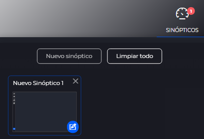
Para la edición de un sinóptico existen varias opciones: * Desde el explorador de documentos, buscaremos en la jerarquía de documentos la ubicación del sinóptico y le editaremos bien mediante la opción de editar de la toolbar superior de la jerarquía o mediante dicha opción del menú contextual del documento.
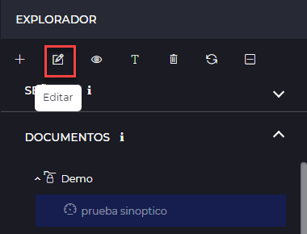 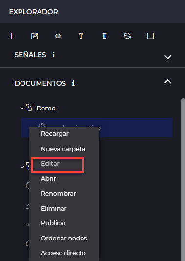
- En el explorador de documentos, en la sección central de documentos de la jerarquía seleccionada, al situarnos sobre el sinóptico nos aparecerá el siguiente botón 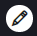 para editar el sinóptico.
- Desde la edición de otro sinóptico, también existe la posibilidad de abrir en modo edición otro sinóptico.
Con cualquiera de las opciones anteriormente expuestas se abrirá el diseñador de sinópticos.
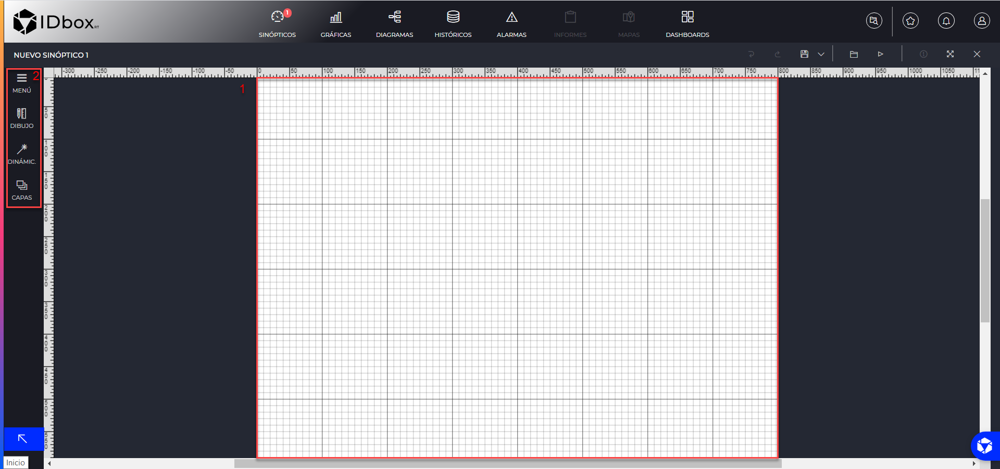
El área principal de la interfaz (1) estará ocupada por el tapiz, donde se dibujará el sinóptico.
La rueda del ratón permite aumentar o disminuir el detalle del tapiz.
Al seleccionar una opción del panel lateral izquierdo(2) se desplegará un submenú con las configuraciones disponibles para ese elemento.
Los menús disponibles del panel lateral izquierdo son:
- Menú: Da acceso a las herramientas básicas del trabajo sobre los elementos.
- Herramientas de dibujo: Da acceso a los elementos estáticos que se pueden añadir al sinóptico (formas, texto, imagen, etc.).
- Componentes dinámicos: Da acceso a los elementos dinámicos que se pueden añadir al sinóptico (barra de progreso, gráfica, indicador, etc.).
- Capas: Da acceso al listado de capas del sinóptico. Permite configurar las capas del sinóptico.
- Parámetros: Da acceso al listado de parámetros del sinóptico. Permite configurar los parámetros del sinóptico.
Cuando se selecciona más de un componente en el tapiz, se abre el panel lateral derecho con las opciones de alineación para aplicar a la selección en varias posiciones.
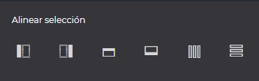
El editor dispone de un portapapeles donde se almacenan los últimos elementos copiados, permitiendo arrastrar los elementos al tápiz para crear copias.
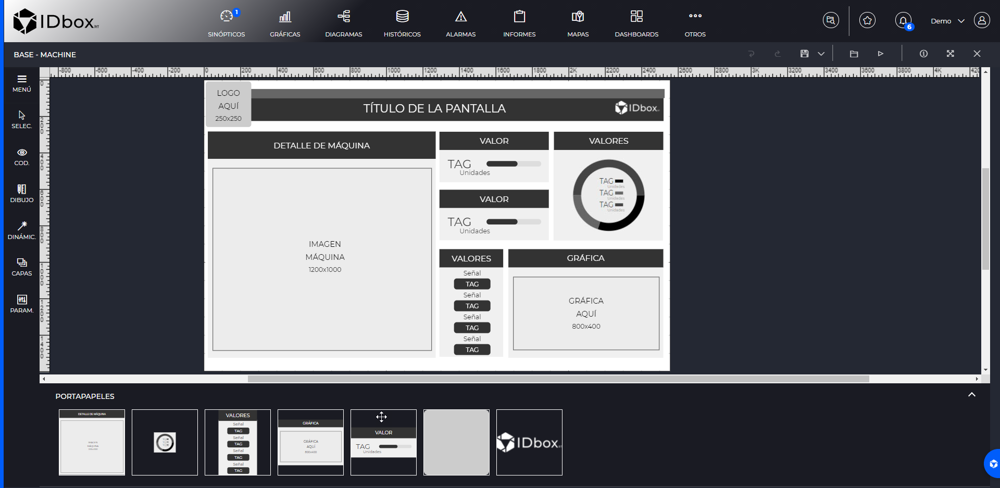
1.1.1 Menú
Desde el apartado de Menú, al seleccionarlo se desplegará un panel contiguo con las siguientes acciones:
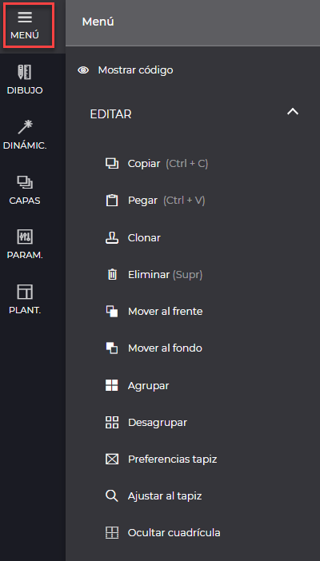
- Mostrar/Ocultar código: Muestra el código svg del sinóptico. Es posible modificar el sinóptico desde la vista de código.
- Copiar: Posibilidad de copiar elementos seleccionados (combinación de teclado CTRL+C).
- Pegar: Acción de pegar aquellos elementos previamente copiados (CTRL+V).
- Clonar: Capacidad de clonar elementos previamente diseñados sobre el tapiz del sinóptico.
- Eliminar: Posibilidad de borrar elementos (tecla de Supr).
- Mover al frente: Permite ordenar elementos del tapiz, traer delante al tapiz los elementos seleccionados.
- Mover al fondo: Permite ordenar elementos del tapiz, llevar atrás del tapiz los elementos seleccionados.
- Agrupar: Permite agrupar los elementos seleccionados.
- Desagrupar: Permite desagrupar un elemento previamente agrupado en tantos elementos como tenian antes de la agrupación
- Preferencias tapiz: Muestra en el panel derecho las propiedades del tápiz dónde se permite elegir la resolución, ajustar el tapiz al contenido del lienzo, cambiar la orientación y aplicar al tapiz un fondo (color o importar archivos svg). Al seleccionar esta opción se abre un panel lateral a la derecha del tapiz con dichas opciones.
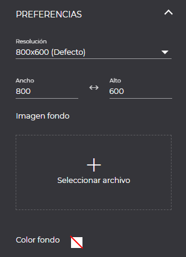
- Ajstar al tapiz: Permite centrar el lienzo ajustándose al tamaño del tápiz.
- Mostrar cuadrícula: Permite mostrar u ocultar la cuadrícula en el lienzo.
1.1.2 Herramientas de dibujo
Las herramientas de dibujo nos permiten dibujar formas estáticas en los sinópticos, se pueden mejorar estos elementos cambiando el color, bordes y otros efectos.
Para dibujar elementos en el tapiz, debemos seleccionar la forma deseada y pinchar sobre el tapiz en el lugar donde queramos empezar a dibujar el elemento.
Disponemos de las siguientes herramientas de dibujo.
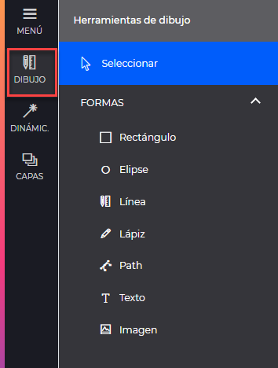
- Seleccionar: Permite seleccionar uno o varios (Shift) objetos del tapiz.
- Rectángulo: Permite dibujar un rectángulo. Si se mantiene pulsado ‘shift’ al dibujar, dibujará un cuadrado.
- Elipse: Permite dibujar una elipse. Si se mantiene pulsado ‘shift’ al dibujar, dibujará un circulo.
- Línea: Permite dibujar líneas rectas.
- Lápiz: Permite dibujar una linea a mano alzada.
- Path: Permite dibujar un trazado punto a punto. La herramienta permite modificar la curvatura de las líneas que unen los puntos una vez creado el trazado.
- Texto: Crea una caja de texto.
- Imagen: Permite insertar una imagen al tapiz.
Al dibujar cualquier de las formas, se abrirá un panel derecho con las propiedades genéricas así como las específicas de algunas de ellas.
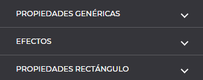
1.1.2.1 Propiedades genéricas
Las propiedades genéricas que aplica a todos las herramientas de dibujo son las siguientes:
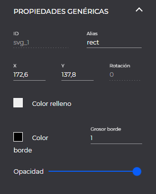
- ID: Identificador que tendrá el objeto en el código.
- Alias: Nombre que permitirá identificar el objeto en los selectores de plantillas.
- x e y: Indica la posición x e y del objeto en el tapiz y permite la localización exacta del objeto al introducir los valores en los campos.
- Rotación: Indica el rango de rotación del objeto.
- Grosor borde: Estable el grosor de borde del objeto mediante un valor, bien introducido en la caja de texto o mediante los selectores de valor. 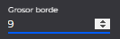
- Color borde: Estable el color del borde mediante código hexadecimal.
- Color relleno: Establece el color de relleno del elemento meciante código hexadecimal.
- Opacidad: Configura la transparencia del objeto.
1.1.2.2 Efectos
Las propiedades incluidas dentro del apartado de efectos también son comunes a todas las herramientas de dibujo, excepto la propiedad cambio de color que no aplica al componente imagen.
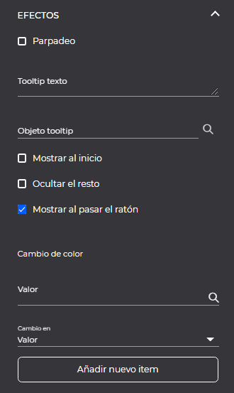
- Parpadeo: Opción de activar el parpadeo del elemento cuando se está visualizando el sinóptico.
- Tooltip texto: Texto que se mostrará al situarse o pinchar sobre el objeto.
- Objeto tooltip: Permite seleccionar otro objeto del sinóptico (seleccionándolo con la lupa o escribiendo su Identificador en el campo de texto) para ser mostrado cuando se pasa el puntero del ratón sobre él.
- Mostrar al inicio: Opción de mostrar el tooltip al iniciar el sinóptico.
- Ocultar el resto: Opción de ocultar los demás tooltips del sinóptico que estén visibles.
- Mostrar al pasar el ratón: Muestra el tooltip al pasar el cursor por encima del elemento. Si está desactivado este check se mostrará el tooltip unicamente al hacer click sobre el elemento. Cambio de color
- Valor: Permite seleccionar la señal por la que se va a producir el cambio de color del documento.
- Cambio en: Permite seleccionar si el cambio de color va a venir definido por el valor o estado de la señal seleccionada.
- Añadir nuevo item: Configuración del color así como del intervalo por el que se producirá el cambio del color en el elemento. Nos permite añadir tantos items como cambios de color por intervalo necesarios.
1.1.2.3 Propiedades específicas
Algunas herramientas de dibujo disponen de propiedades específicas, de las herramientas que actualmente dispone el sistema disponen de propiedades específicas el rectángulo, la elipse, el texto y la imagen.
1.1.2.3.1 Rectángulo
La herramienta rectángulo dispone de las siguientes propiedades específicas.
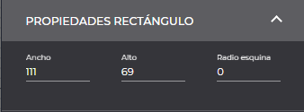
- Ancho/alto: Permite ajustar con más precisión las dimensiones del rectángulo/cuadrado.
- Radio esquina: Permite aplicar el radio a las esquinas.
1.1.2.3.1 Elipse
La herramienta elipse dispone de las siguientes propiedades específicas.
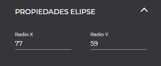
- Radio X/Radio Y: Permite ajustar las dimensiones(X e Y)con más precisión numérica.
1.1.2.3.1 Texto
La herramienta de texto dispone de las siguientes propiedades específicas.
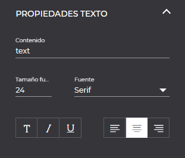
- Contenido: Indica el texto a visualizar en el elemento
- Tamaño de fuente: Permite cambiar el tamaño de la fuente.
- Opciones de formato de texto: Permite activar el formato del texto en negrita, cursiva y subrayado. Se pueden combinar varios formatos.
- Fuente: Permite la selección de la fuente para el texto.
- Alineación: Permite seleccionar la alineación del texto en el propio elemento.
1.1.2.3.1 Imagen
La herramienta imagen dispone de las siguientes propiedades específicas.
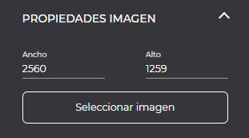
- Ancho/Alto: Permite ajustar con más precisión númerica las dimensiones de la imagen.
- Seleccionar imagen: Permite cambiar la imagen previamente seleccionada al agregar el objeto.
1.1.3 Componentes dinámicos
Los componentes dinámicos son los objetos encargados de realizar las animaciones que muestren el estado de los diferentes puntos de control a monitorizar. Su representación cambiará en función de los valores que reciban en tiempo real de la señal que tengan asociada.
Para añadir estos componentes al tapiz, tendremos que seleccionar el componente y arrastrarlo a la posición del tapiz deseada.
Disponemos de los siguientes componentes dinámicos.
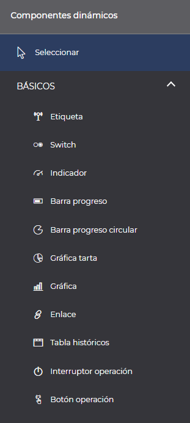
Al igual que ocurre con las herramientas de dibujo, todos estos componentes dinámicos disponen de las mismas propiedades genéricas explicadas en el apartado de herramientas de dibujo Propiedades genéricas y efectos, además de las específicas de cada componente.
Todos los componentes dinámicos comparten la misma propiedad que es señal, la cual escogeremos desde las propiedades especificas de cada componente, el cual nos abrirá el selector de señales en donde podremos seleccionar la señal o función a la que queremos vincular el componente.
1.1.3.1 Componente etiqueta.
El componente etiqueta es un cuadro de texto al cual se le asigna una señal, y mostrará en la visualización su valor en tiempo real.
Además de las Propiedades genéricas y los efectos, el componente etiqueta dispone de las propiedades del componente Texto y de las siguientes específicas.
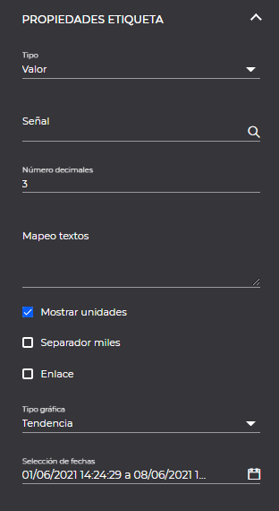
- Tipo: Opción de elegir si se mostrará el valor o el estado en tiempo real.
- Señal: Permite seleccionar una señal del listado de señales disponibles que se abrirá al seleccionar sobre la lupa o pinchar directamente sobre este campo.
- Número de decimales: Si el tipo seleccionado es “valor”, se muestra la opción para introducir el número de decimales que se muestran.
- Mapeo de textos: Si el tipo seleccionado es “valor”, nos permite introducir mapeos de texto a los valores. Por ejemplo: O-Apagado, 1-Encendido.
- Mostrar unidades: Marcado por defecto. Si el tipo seleccionado es “valor”,nos permite elegir si mostrar las unidades de la señal.
- Separador de miles: Nos permite elegir si se mostrará un punto como separador de miles.
- Mostrar estado: Si el tipo seleccionado es “estado”, nos permite elegir si se mostrarán todos los estados o el estado más prioritario.
- Enlace: Si el tipo seleccionado es “valor”, nos permite elegir si se habilitará el evento de clic para abrir una nueva gráfica con la señal seleccionada.
- Tipo gráfica: Nos permite elegir el tipo de gráfica que se abrirá al hacer clic sobre el objeto.
- Selección de fechas: Si el tipo de gráfica seleccionada el distinta de “tiempo real”, nos permite elegir las fechas con las que se abrirá la gráfica al hacer clic sobre el objeto.
1.1.3.2 Componente indicador.
El componente indicador es una aguja que cambia de posición según el valor en tiempo real de la señal seleccionada dentro de los valores de minimo y máximos configurados en el propio componente.
Además de las Propiedades genéricas y los efectos (salvo la propiedad cambio de color que no aplica a este componente), el componente indicador dispone de las siguientes propiedades específicas.
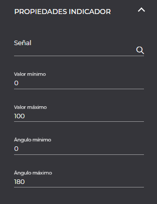
- Señal: Permite seleccionar una señal del listado de señales disponibles que se abrirá al seleccionar sobre la lupa o pinchar directamente sobre este campo.
- Valor mínimo: Rango mínimo de valores del indicador.
- Valor máximo: Rango máximo de valores del indicador.
- Ángulo mínimo: Rango mínimo de rotación de la aguja (en grados)
- Ángulo máximo: Rango máximo de rotación de la aguja (en grados)
1.1.3.3 Barra de progreso.
El componente barra de progreso, es un elemento gráfico en forma de banda que varía en función del valor en tiempo real de la señal.
Además de las Propiedades genéricas y los efectos, el componente barra de progreso dispone de las propiedades del componente Rectángulo y de las siguientes específicas.
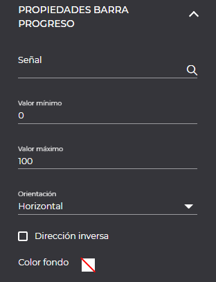
- Señal: Permite seleccionar una señal del listado de señales disponibles que se abrirá al seleccionar sobre la lupa o pinchar directamente sobre este campo.
- Valor mínimo: Valor mínimo a mostrar en la barra de progreso
- Valor máximo: Valor máximo a mostrar en la barra de progreso
- Orientación: Permite orientar la barra de progreso horizontal o verticalmente.
- Dirección inversa: Permite activar la dirección inversa en la barra, realizandose el movimiento de derecha a izquierda.
- Color fondo: Color de fondo estático de la barra.
1.1.3.4 Componente switch.
El componente switch permite dibujar varios objetos que se mostrarán cada uno de ellos en función del valor en tiempo real de la señal elegida.
Además de las Propiedades genéricas y los efectos (salvo la propiedad cambio de color que no aplica a este componente), el componente switch dispone de las siguientes propiedades específicas.
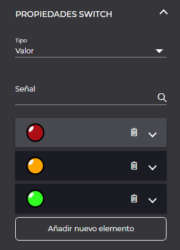
- Señal: Permite seleccionar una señal del listado de señales disponibles que se abrirá al seleccionar sobre la lupa o pinchar directamente sobre este campo.
- Añadir nuevo item: Permite agregar tantos items como configuraciones de valores queramos para la señal. Por cada item añadido se nos mostrara una ficha de configuración del item como se muestra en la siguiente captura
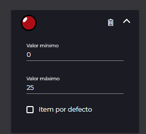
En esta configuración se nos mostrará una miniatura de la imagen que se visualizará cuando la señal tenga el valor configurado para ese item. * Valor mínimo: Valor mínimo del rango de valores por el cual se mostrará la imagen. * Valor máximo: Valor máximo del rango de valores por el cual se mostrará la imagen. * Item por defecto: Nos permite seleccionar cual será el item por defecto a mostrar de todos los items configurados.
Para agregar la imagen a cada item configurado debemos seguir los siguientes pasos.
- En el tapiz tendremos que tener la forma o imagen que queremos vincular al item. (en nuestro ejemplo será el cuadrado en rojo) 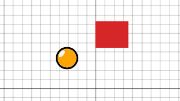
- Arrastrar la imagen (cuadrado en rojo) encima del componente switch que habremos incorporado previamente al tapiz, nos aparecerá la siguiente pantalla en donde tendremos que arrastrar la imagen al item deseado. 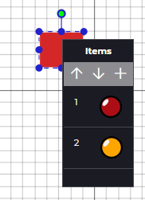
Los items podremos cambiarlos de orden bien desde la pantalla de configuración del propio switch haciendo drag and drop sobre el item a mover y soltando sobre la nueva posición.
1.1.3.5 Barra de progreso circular.
El componente barra de progreso circular, es un indicador de porcentaje en forma de circulo que visualmente muestra el valor de la señal seleccionada.
Además de las Propiedades genéricas y los efectos, la barra de progreso circular dispone de las siguientes propiedades específicas.
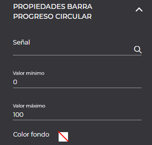
- Señal: Permite seleccionar una señal del listado de señales disponibles que se abrirá al seleccionar sobre la lupa o pinchar directamente sobre este campo.
- Valor mínimo: Valor mínimo a mostrar en la barra de progreso
- Valor máximo: Valor máximo a mostrar en la barra de progreso
- Color fondo: Color de fondo estático de la barra.
1.1.3.6 Componente enlace.
El componente enlace crea en el tapiz un rectángulo que se sitúa sobre la zona a enlazar. Permite elegir entre enlaces a diferentes documentos de la web(sinopticos, gráficas, diagramas, etc.)
Además de las Propiedades genéricas y los efectos (salvo la propiedad cambio de color que no aplica a este componente), el componente enlace dispone de las siguientes propiedades específicas.
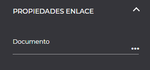
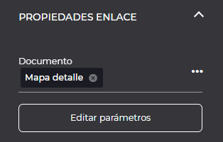
- Documento: Permite seleccionar la ubicación y el documento sobre el que queremos crear un enlace.
- Editar parámetros: Visible si el documento seleccionado es de tipo sinóptico y tiene parámetros. Al hacer clic muestra ventana modal en el que permite establecer los valores de los parámetros del sinóptico seleccionado.
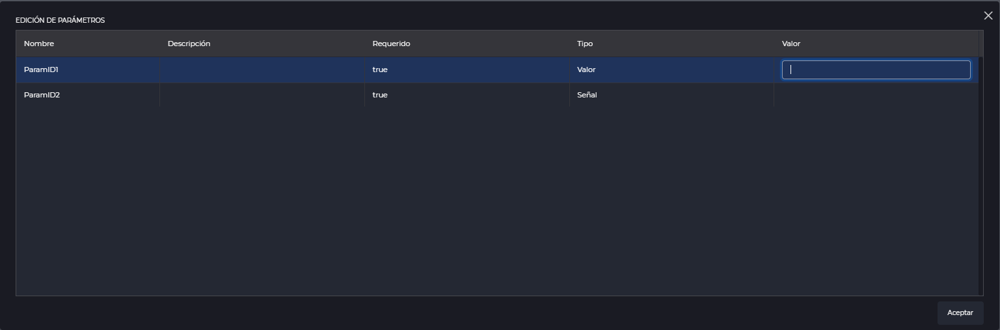
1.1.3.7 Gráfica de tarta.
El componente gráfica de tarta, permite visualizar los valores de diferentes señales mediante una representación gráfica en tarta.
Además de las Propiedades genéricas y los efectos (salvo la propiedad cambio de color que no aplica a este componente), la gráfica de tarta dispone de las siguientes propiedades específicas.
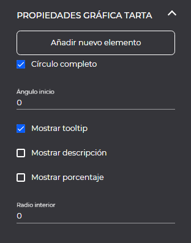
- Añadir nuevo item: Permite la selección y configuración de las señales a añadir a la gráfica de tarta. Al añadir un nuevo item, se agrega a la configuración una ficha en la cual podemos seleccionar la señal, el tooltip a mostrar y el color, así como la opción de eliminar el item seleccionado.
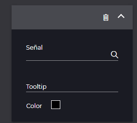
- Círculo completo: Permite seleccionar si se quiere una circunferencia completa (360º, checkeado) o media (180º sin checkear)
- Ángulo de inicio: Permite seleccionar cual será la posición de inicio en grados para el primer valor.
- Mostrar tooltip: Marcado por defecto, muestra el nombre de la señal o el texto configurado a mostrar en el tooltip, al pasar por encima de la sección de la tarta correspondiente.
- Mostrar descripción: Muestra el nombre de la señal encima de cada sección de la tarta.
- Mostrar porcentaje: Muestra el porcentaje de la señal encima de cada sección de la tarta.
- Radio interior: Permite configurar el centro hueco de la tarta (tipo donut) bien en pixel indicando solo valor númerico o en porcentaje añadiendo al valor númerico simbolo de %.
Dentro de la configuración de la gráfica de tarta, se dispone de la opción de reordenación de los items mediante drag and drop.
1.1.3.8 Componente gráfica.
El componente gráfica permite agregar al sinóptico una gráfica generada previamente y almacenada en el sistema.
Además de las Propiedades genéricas y los efectos (salvo la propiedad cambio de color que no aplica a este componente), el componente gráfica dispone de las siguientes propiedades específicas.
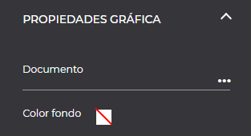
- Documento: Permite seleccionar la ubicación y la gráfica a embeber en el sinóptico.
- Color fondo: Permite seleccionar el color de fondo de la gráfica, por defecto transparente.
1.1.3.9 Tabla históricos.
El componente tabla históricos permite visualizar los datos históricos de varias señales en formato tabla.
Además de las Propiedades genéricas y los efectos (salvo la propiedad cambio de color que no aplica a este componente), el componente taabla históricos dispone de las siguientes propiedades específicas.
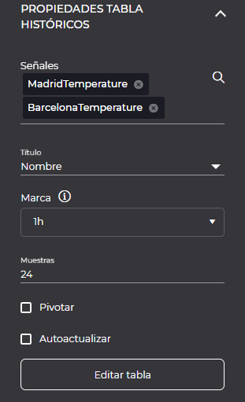
- Señales: Permite seleccionar las señales a visualizar.
- Título: Permite indicar si mostrar el nombre o la descripción de la señal, por defecto se mostrará el nombre de la señal.
- Marca: Permite modificar la frecuencia de los datos históricos.
- Muestras: Permite modificar el número de muestras a mostrar.
- Pivotar: Permite pivotas la tabla (cambiar las filas por columnas).
- Autoactualizar: Permite indicar si la tabla se actualizará con nuevos datos históricos.
- Editar tabla: Muestra una ventana modal que permite modificar las propiedades de la tabla.
1.1.3.9.1 Propiedades tabla.
Permite modificar las propiedades de la tabla mostrando su previsualización.
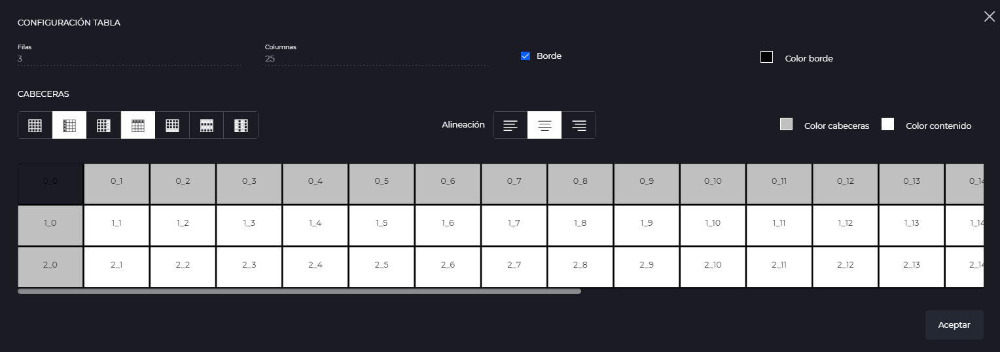
- Filas: Muestra el número de filas de la tabla.
- Columnas: Muestra el número de columnas de la tabla.
- Borde: Permite seleccionar si mostrar el borde de la tabla o no.
- Color border: Permite modificar el color del borde de la tabla.
- Cabeceras: Permite modificar las celdas resaltadas (ninguna, primera fila, primera columna, última fila, última columna, filas a bandas, columnas a bandas).
- Alineación: Permite modificar la alineación de los textos de la tabla (izquierda, centro o derecha).
- Color cabeceras: Permite modificar el color de relleno de las celdas resaltadas.
- Color contenido: Permite modificar el color de las celdas que no están resaltadas.
Se permite cambiar el alto de las filas y el ancho de las columnas arrastrando el ratón sobre la línea divisoria:
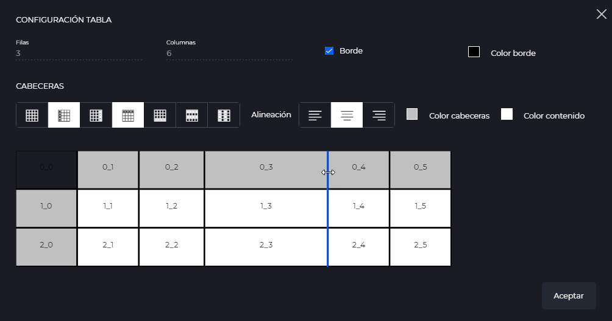
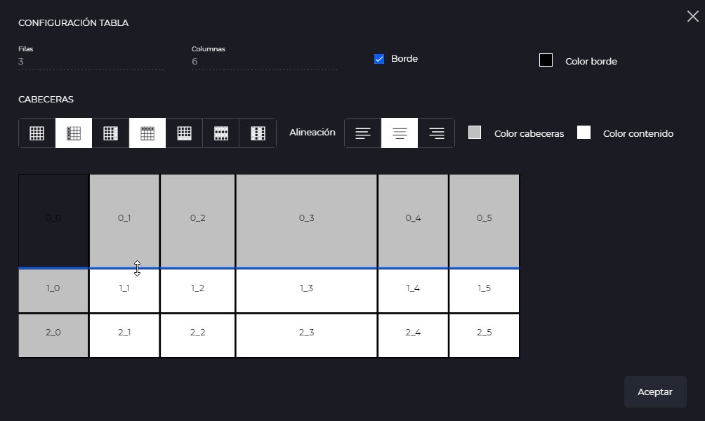
1.1.3.10 Interruptor operación.
El componente interruptor permite enviar comandos sobre la señal seleccionada.
Además de las Propiedades genéricas y los efectos (salvo la propiedad cambio de color que no aplica a este componente), el componente interruptor operación dispone de las siguientes propiedades específicas.
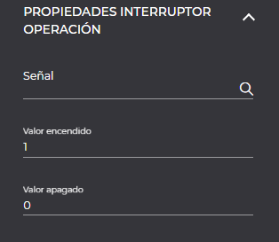
- Señal: Permite seleccionar la señal sobre la que se va a enviar el comando.
- Valor encendido: Valor a enviar cuando se enciende el interruptor.
- Valor apagado: Valor a enviar cuando se apaga el interruptor.
Para agregar la imagen a cada item configurado debemos seguir los siguientes pasos.
- En el tapiz tendremos que tener la forma o imagen que queremos vincular al item. (en nuestro ejemplo será el cuadrado en verde) 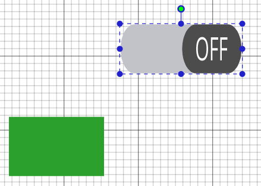
- Arrastrar la imagen (cuadrado en verde) encima del componente switch que habremos incorporado previamente al tapiz, nos aparecerá la siguiente pantalla en donde tendremos que arrastrar la imagen al item deseado. 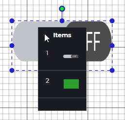
1.1.3.11 Botón operación.
El componente botón operación permite enviar comando sobre la señal seleccionada. Permite seleccionar entre tres formas de envío.
Además de las Propiedades genéricas y los efectos, el componente botón operación dispone de las siguientes propiedades específicas.
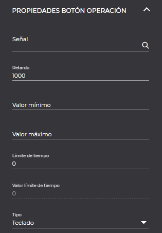
- Señal: Permite seleccionar la señal sobre la que se va a enviar el comando.
- Retardo: Tiempo de retardo para realizar el envío.
- Valor mínimo: Valor mínimo que se podrá enviar en el comando.
- Valor máximo: Valor máximo que se podrá enviar en el comando.
- Límite de tiempo: Límite de tiempo para reestablecer el valor.
- Valor límite de tiempo: Valor a reestablecer cuando transcurra el tiempo indicado en el campo “límite de tiempo”.
- Tipo: Permite seleccionar el tipo de envío: teclado, selector o envío. El tipo por defecto es teclado.
Si el tipo es “teclado” se mostrarán las siguientes propiedades:
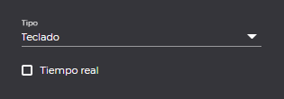
- Tiempo real: Permite seleccionar si inicializar el teclado con el último valor de la señal.
Si el tipo es “selector” se mostrarán las siguientes propiedades:
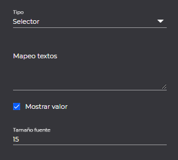
- Mapeo textos: Permite seleccionar la señal sobre la que se va a enviar el comando.
- Mostrar valor: Permite seleccionar si mostrar el valor o no.
- Tamaño fuente: Si se ha seleccionado “mostrar valor”, permite modificar el tamaño del texto.
Si el tipo es “envío” se mostrarán las siguientes propiedades:
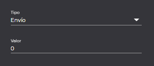
- Valor: Permite seleccionar el valor a enviar.
1.1.4 Capas
Desde el apartado de capas, podemos crear tantas capas como necesitemos para el diseño de nuestro sinóptico así como elegir en que capa queremos trabajar en cada momento bloqueando el resto de capas. Se recomienda su uso cuando importamos sinópticos grandes y queremos añadir componentes dinámicos sin modificar su aspecto.
Las opciones que disponemos en el panel de capas son las siguientes:
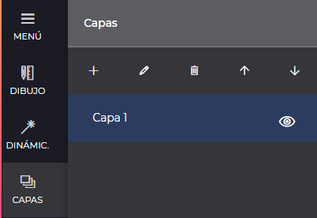
- Añadir: Permite añadir una nueva capa
- Eliminar: Permite borrar la capa seleccionada
- Renombrar: Permite renombrar la capa seleccionada
- Subir capa: Permite la ordenación de capas, subiendo una posición la capa seleccionada.
- Bajar capa: Permite la ordenación de capas, bajando una posición la capa seleccionada.
- Ocultar/Mostrar capa: Permite ocultar o mostrar en el tapiz la capa.
1.1.5 Parámetros.
Los parámetros son objetos que permiten la configuración y edicion de valores en ciertos elementos, como etiquetas, barra de progresión… de forma que se puedan editar y acceder fácilmente a estos valores.
1.1.5.1 Lista de parámetros.
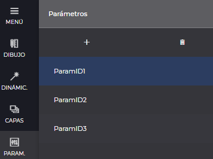
En el apartado de parámetros está definida la lista de parametros del documento, en este apartado podemos crear, editar y eliminar estos.
- Añadir: Permite añadir un nuevo parámetro.
- Eliminar: Permite borrar el parámetro selecionado.
Al seleccionar un parámetro se mostrará el panel derecho con las propiedades del parámetro.
1.1.5.2 Propiedades de parámetros.
Permite modificar las siguientes propiedades del parámetro seleccionado:
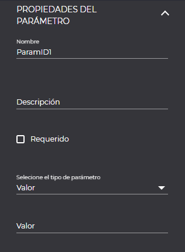
- Título: Añadir o editar un título.
- Descripción: Añadir o editar una descripción.
- Requerido: Si se quiere que el valor sea obligatorio.
- Tipo: los parametros pueden ser de dos tipos, valor o señal.
- Selector de señar/valor: En este apartado podemos seleccionar una señal con la ayuda del modal o simplemente añadir un nombre.
1.2 Visor de sinópticos
El visor de sinópticos permite la visualización de un sinóptico previamente diseñado con las herramientas del Diseñador mostrando los valores en tiempo real de los componentes dinámicos configurados.
Para visualizar un sinóptico, será necesario seleccionar un documento de tipo sinóptico desde el explorador de documentos, disponemos de varias opciones.
-
Desde la jerarquía una vez seleccionado el documento, bien mediante la opción de de la toolbar superior, mediante la opción de Abrir del menú contextual del documento o con doble click sobre el sinóptico a visualizar.
-
En el explorador de documentos, en la sección central de documentos de la jerarquía seleccionada, al hacer click sobre el sinóptico.
Mediante el botón se podrá visualizar el listado de señales del sinóptico.
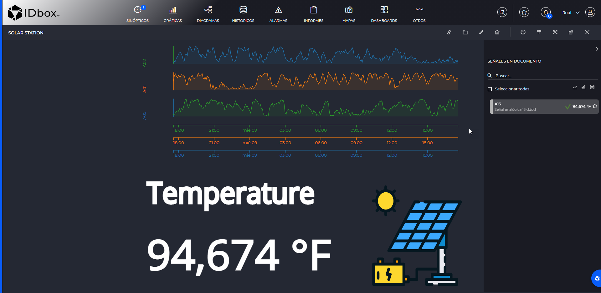
1.2.1 Sinóptico con parámetros.
Si el sinóptico visualizado tiene parámetros, al cargar se mostrar una modal que permite asignar los valores a los parámetros del sinóptico.
Es obligatorio asignar valor a todos los valores requeridos.